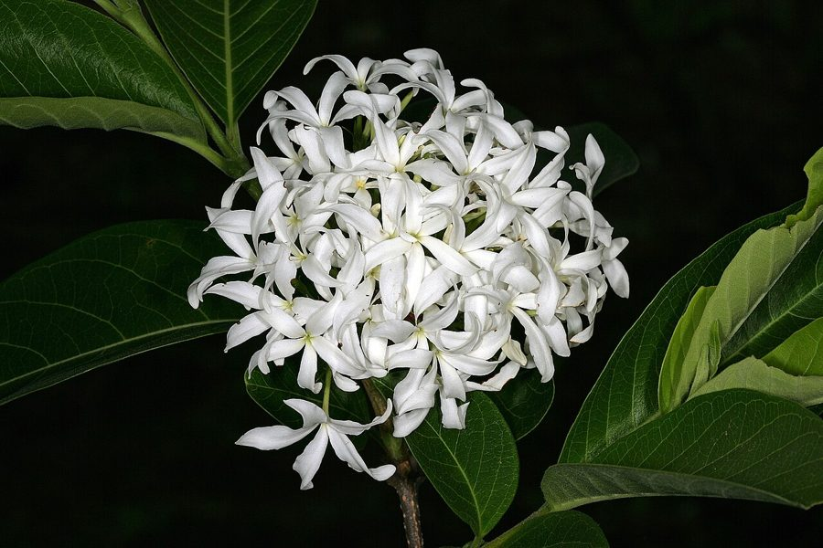

कुटजKurchi
Holarrhena pubescens · Apocynaceae · FLR-0298

- Scientific name वैज्ञानिक नाम
- Holarrhena pubescens Wall. ex G.Don
- Family कुल
- Apocynaceae
- Hindi हिंदी
- कुटज
- Local names स्थानीय नाम
- kutaj, kurchi, kuda, inderjao
- Status here यहाँ की स्थिति
- native
- Movement आवागमन
- Resident, here all year
- Known from कहाँ दर्ज
- Others have published records from the wider Awadh–Purvanchal plain, none yet from Basti–Ayodhya अवध–पूर्वांचल से दूसरों के प्रकाशित अभिलेख, बस्ती–अयोध्या से अभी नहीं
- IUCN IUCN
- not evaluated
- Review समीक्षा
- audited and independently read
When to look कब देखें
Present all year. साल भर मौजूद।
Uses and possibilities उपयोग और संभावनाएँ
“Traditional medicine” means a documented traditional use, not a claim that it works. Nothing on this page is medical advice.
Drawn from the documented uses in the profile below, where each is labelled traditional, current or a research lead. All uses →
कुटज / Kurchi
Holarrhena pubescens Wall. ex G.Don — Apocynaceae
कुटज — एक छोटा पर्णपाती पेड़ या झाड़ी जो सूखी जंगलों, खराब जमीन और नदी के सूखे किनारों पर पाई जाती है। पत्तियाँ सँकरी, गहरी हरी, कुछ झुर्रीदार सतह वाली होती हैं। फूल सफ़ेद, सुगंधित, गुच्छों में आते हैं और वसंत में खिलते हैं। पारंपरिक आयुर्वेदिक दवा के लिए पेड़ बहुत महत्वपूर्ण है, विशेषकर आँतों के संक्रमण और दस्त के लिए। यह वन्यजीव संरक्षण अधिनियम के तहत संरक्षित है।
Quick Identification त्वरित पहचान
| Feature | Description |
|---|---|
| Size | Small deciduous tree or shrub, 3–8 m tall |
| Leaves | Lanceolate to linear-lanceolate, 6–12 cm, opposite, slightly pubescent |
| Flowers | White, fragrant, about 1.5–2 cm, in terminal cymes, February–April |
| Fruit | Twin elongate follicles, 15–30 cm long, containing winged seeds |
| Bark | Pale greyish-brown, peeling in thin flakes |
| The test | Linear-lanceolate opposite leaves and white fragrant flowers are diagnostic |
Field tip: In dry areas and forest margins, look for a small tree with narrow, opposite leaves and clusters of small fragrant white flowers in spring. The distinctive twin elongate fruits persist on the tree for months.
हिंदी — कैसे पहचानें: सँकरी, लंबी, विपरीत पत्तियाँ। सफ़ेद, महकदार फूल। लंबी, जुड़ी हुई फलियाँ।
Morphology आकारिकी
Biometrics (dry deciduous and semi-arid regions, northern India):
| Measurement | Range |
|---|---|
| Height | 3–8 m |
| Trunk diameter | 10–30 cm |
| Leaf length | 6–12 cm |
| Leaf width | 1–2 cm |
| Flower diameter | 1.5–2 cm |
| Fruit length | 15–30 cm |
Trunk and bark: Pale greyish-brown, peeling in thin flakes. Wood pale yellow, moderately hard.
Leaves: Opposite, decussate, lanceolate to linear-lanceolate, 6–12 cm long, 1–2 cm wide. Margin entire. Slightly hairy (pubescent) on both surfaces. Petiole short, 0.5–1 cm.
Flowers: Small, about 1.5–2 cm across, white, very fragrant, petals recurved. Stamens 5. In terminal cymes of 10–20 flowers. February to April.
Fruit: Very distinctive—twin elongate follicles (seed pods) arising from the ovary, each 15–30 cm long, thin and somewhat flattened. Follicles persist on the tree for many months. Seeds flattened, with papery wings for wind dispersal.
हिंदी: पत्तियाँ सँकरी, लंबी, विपरीत। फूल सफ़ेद, महकदार। फल दो जुड़ी हुई, लंबी लेकिन पतली फलियाँ।
Behaviour & Ecology व्यवहार और पारिस्थितिकी
Kurchi is a pioneer species of dry deciduous forests, forest margins, and dry, sandy soils. It tolerates drought and poor soil conditions. The tree is deciduous, with leaf fall in March–April. The fragrant flowers are visited by bees and butterflies. The winged seeds are dispersed by wind. The tree coppices readily after cutting or fire. Historically it was widely collected for traditional medicine.
हिंदी: सूखी जंगलों और खराब जमीन में पनपता है। सूखे को सहन करता है। आयुर्वेद के लिए बहुत महत्वपूर्ण है।
Life Cycle / Phenology जीवन चक्र
| Month / season | Event |
|---|---|
| January–February | Dormancy; gradual leaf fall from March |
| February–April | Flowering with white fragrant flowers |
| April–June | Fruit develops during monsoon onset |
| June–August | Fruit matures; seeds ripen |
| August–October | Mature fruits split; seeds disperse by wind |
| 4–6 years from seed | First flowering |
Seedlings germinate readily in monsoon rains on disturbed or sandy soil. Growth is moderate. Lifespan reaches 30–50 years.
हिंदी: मार्च में पत्तियाँ गिरती हैं। फरवरी से अप्रैल तक फूल। जून तक फल तैयार। अगस्त तक बीज गिर जाते हैं।
Associated Species / Interactions संबंधित प्रजातियाँ
- Pollinator visitors: Asian Honey Bee and other bees on flowers.
- Forest companion: Often grows with dry deciduous forest species on poor soils.
Pests and Diseases कीट और रोग
- Leaf-eating insects; rarely severe on mature trees.
- No significant fungal diseases in dry climates.
- Over-harvesting for medicinal use is a threat in some areas.
Agricultural / Human Relevance कृषि प्रासंगिकता
Traditional and ethnobotanical use:
- Ayurvedic medicine (documented traditional use; not medical advice). Kurchi is extensively used in Ayurveda primarily for gastrointestinal conditions. The bark, roots, and seeds are used in preparations for dysentery, diarrhoea, and intestinal parasites. Classical texts describe its use for grahani (chronic diarrhoea) and atisara (acute diarrhoea). The standing not-medical-advice applies: consult qualified practitioners.
- Traditional preparations: Commonly available in Ayurvedic pharmacies as decoctions and formulations.
Today. Kurchi remains in use in Ayurvedic medicine but is less commonly available as wild-harvested material. Cultivation attempts exist in some regions.
Research direction (a lead, not a result). The phytochemical composition of Kurchi bark and its antimicrobial and antiparasitic properties have been documented in scientific literature. Whether traditional doses and modern standardised preparations are equivalent would merit investigation.
हिंदी: आयुर्वेद में दस्त और आँतों की समस्या के लिए प्रसिद्ध। दवा की दुकानों में मिलता है। यह विधि अधिनियम 1972 के तहत संरक्षित है।
Expected Locally स्थानीय रूप से अपेक्षित
Not a field record. Written from published accounts for eastern Uttar Pradesh. No confirmed local sighting yet — if you have seen it, that is what the atlas needs.
अभी तक स्थानीय पुष्टि नहीं। यह विवरण प्रकाशित स्रोतों से है, किसी अवलोकन से नहीं।
GBIF holds published records from the wider Awadh–Purvanchal plain. Kurchi is expected in dry deciduous forests and forest margins of eastern Uttar Pradesh, particularly on poor soils and dry riverbeds. The tree is likely underrecorded locally due to its preference for marginal habitats.
Distribution वितरण
Global range: Distributed across tropical and subtropical Asia from India through Myanmar to Cambodia and southern China.
In India: Found in dry deciduous forests from the sub-Himalayan region through the Indo-Gangetic plain to peninsular India, up to about 1,500 m elevation.
In Uttar Pradesh: Scattered in the eastern dry deciduous zone and forest margins; less common in wetter areas.
In Basti district / eastern UP: Expected in dry deciduous forests and margins; exact distribution not yet documented.
Research Questions शोध प्रश्न
- How many Kurchi trees remain in local dry forests, and what is their population trend? / आपके इलाके की सूखी जंगलों में कितने कुटज के पेड़ बचे हैं? — Walk transects; map all trees encountered.
- Do local traditional practitioners still use Kurchi, and from where do they source it? / क्या स्थानीय हकीम और वैद्य अब भी कुटज का इस्तेमाल करते हैं? — Interview traditional healers; document sourcing.
- What is the reproductive success of Kurchi in its natural habitat? — Count fruits on 10 marked trees; collect and test seed viability.
- Which insects visit the flowers, and what is the pollinator spectrum? — Thirty-minute observations at flowering trees.
- What is the regeneration rate of Kurchi seedlings in dry forest margins after monsoon? — Mark plots and count seedlings monthly.
Similar Species मिलती-जुलती प्रजातियाँ
| Species | How to tell apart | हिंदी | |
|---|---|---|---|
| Adusa (Justicia adhatoda) | Opposite leaves smaller; white flowers with pink markings; ovate leaves | छोटी, अंडाकार पत्तियाँ; गुलाबी धारीदार फूल | |
| [[kaner\ | Oleander]] (Nerium oleander) | Evergreen; flowers pink or red; leaves in whorls; cultivated ornamental | सदाबहार; गुलाबी फूल; बाग़ में ही |
Field rule: A small deciduous tree with narrow opposite leaves, white fragrant flowers in spring, and distinctive twin elongate seed pods persisting on the tree is Kurchi.
Taxonomy & Classification वर्गीकरण
Original description. Originally described as Holarrhena antidysenterica by Wall. (1824) from specimens collected in India. The species has been synonymised as H. pubescens. Type locality is India.
Subspecies. Monotypic — no subspecies are currently recognised.
Family and order placement. Order Gentianales, family Apocynaceae (the dogbane family). The genus Holarrhena contains two or three species of tropical Asian trees, often with medicinal uses.
Phylogenetic notes. Holarrhena pubescens belongs to a clade of Apocynaceous genera with traditional medicinal use, including Wrightia, Thevetia and others.
IUCN status rationale. Not evaluated. Over-harvesting of the bark for traditional medicine is a concern reported in published accounts. Populations are declining.
Photo Gallery फोटो गैलरी
No photos yet — add field photos to media/species/kurchi/ and run node scripts/sync_photos.js.
Wanted photos:
- Whole tree in dry forest setting
- Narrow, opposite leaves
- White fragrant flowers in clusters
- Twin elongate seed pods on tree
- Pods splitting to reveal winged seeds
- Person harvesting bark/roots
References संदर्भ
- Wall., G.Don (1824). Prodromus Florae Nepalicae. London.
- Hooker, J.D. (1876). The Flora of British India. Vol. 3. L. Reeve & Co., London.
- Duthie, J.F. (1903). Flora of the Upper Gangetic Plain and of the Adjacent Siwalik and Sub-Himalayan Tracts. Vol. 2. Government Printing, Calcutta.
- Kirtikar, K.R. & Basu, B.D. (1935). Indian Medicinal Plants. 2nd ed. Vol. 1. Lalit Mohan Basu, Allahabad.
- Chopra, R.N., Nayar, S.L. & Chopra, I.C. (1956). Glossary of Indian Medicinal Plants. CSIR, New Delhi.
- GBIF Occurrence Data — Holarrhena pubescens, India.
Source file: species/flora/trees/kurchi.md